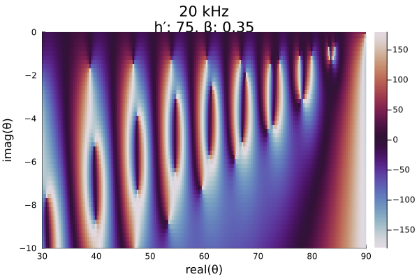
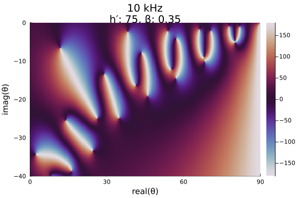
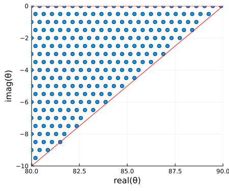
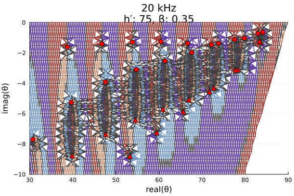
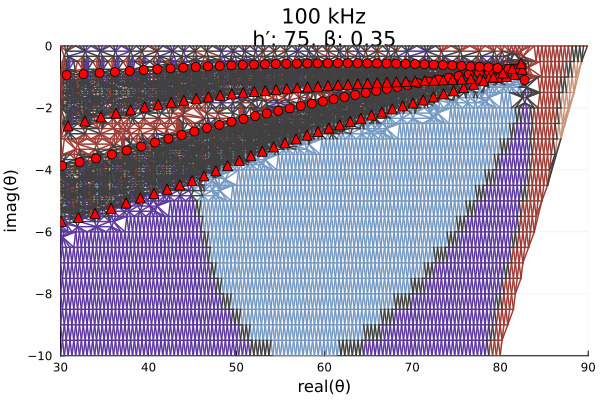
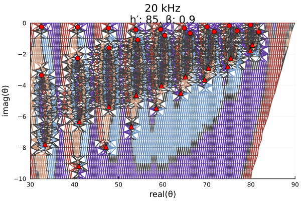

Mesh grid for mode finding - Part 1
The Global complex Roots and Poles Finding (GRPF) algorithm searches for roots and poles of complex-valued functions by sampling the function at the nodes of a regular mesh and analyzing the function's complex phase. The mesh search region can be arbitrarily shaped and guarantees that none of the roots/poles can be missed as long as the mesh step is sufficiently small. Specifically, the phase change of the function value cannot exceed three quadrants across mesh edges. Effectively this means there cannot be equal numbers of roots and poles within the boundary of each identified candidate region.
Because the GRPF algorithm uses an adaptive meshing process, the initial mesh node spacing can actually be greater than the distance between the roots/poles of the function, but there is no established method for a priori estimation of the required initial sampling of an arbitrary function. The GRPF algorithm is implemented in RootsAndPoles.jl and used by LongwaveModePropagator to identify eigenangles of HomogeneousWaveguide's. Therefore, we must experimentally determine a sufficient initial mesh grid spacing to identify roots of the mode equation.
Mode equation
The criteria for mode propagation in the Earth-ionosphere waveguide is described by the fundamental equation of mode theory
\[\det(\overline{\bm{R}}(\theta)\bm{R}(\theta) - \bm{I}) = 0\]
where $\overline{\bm{R}}(\theta)$ is the reflection coefficient matrix for the ground and $\bm{R}(\theta)$ is the reflection coefficient of the ionosphere. Both are functions of the complex angle $\theta$. The discrete values of $\theta$ for which the fundamental equation is satisfied are known as eigenangles.
First, import the necessary packages.
using Plots
using Plots.Measures
using RootsAndPoles
using LongwaveModePropagator
using LongwaveModePropagator: QE, ME, solvemodalequation, trianglemeshExploring the mode equation phase
The U.S. Navy's Long Wavelength Propagation Capability (LWPC) searches the region of the complex plane from 30° to 90° in the real axis and 0° to -10° in the imaginary axis. The lowest order modes are nearest 90° - i0°, excluding 90°. Modes with large negative imaginary components are highly attenuated and have relatively little affect on the total field in the waveguide.
Let's begin by exploring the modal equation phase on a fine grid across the bottom right complex quadrant.
We'll define four different PhysicalModeEquation's that we'll use throughout this example.
lowfrequency = Frequency(10e3)
midfrequency = Frequency(20e3)
highfrequency = Frequency(100e3)
day = Species(QE, ME, z->waitprofile(z, 75, 0.35), electroncollisionfrequency)
night = Species(QE, ME, z->waitprofile(z, 85, 0.9), electroncollisionfrequency)
daywaveguide = HomogeneousWaveguide(BField(50e-6, π/2, 0), day, GROUND[5])
nightwaveguide = HomogeneousWaveguide(BField(50e-6, π/2, 0), night, GROUND[5])
day_low_me = PhysicalModeEquation(lowfrequency, daywaveguide)
day_mid_me = PhysicalModeEquation(midfrequency, daywaveguide)
day_high_me = PhysicalModeEquation(highfrequency, daywaveguide)
night_mid_me = PhysicalModeEquation(midfrequency, nightwaveguide)
day_low_title = "10 kHz\nh′: 75, β: 0.35"
day_mid_title = "20 kHz\nh′: 75, β: 0.35"
day_high_title = "100 kHz\nh′: 75, β: 0.35"
night_mid_title = "20 kHz\nh′: 85, β: 0.9"Here we define a dense rectangular mesh.
Δr = 0.2
x = 0:Δr:90
y = -40:Δr:0
mesh = x .+ im*y';Now we simply iterate over each node of the mesh, evaluating the modal equation with LongwaveModePropagator.solvemodalequation, explicitly imported from LongwaveModePropagator above. We use Julia's Threads.@threads multithreading capability to speed up the computation.
function modeequationphase(me, mesh)
phase = Vector{Float64}(undef, length(mesh))
Threads.@threads for i in eachindex(mesh)
f = solvemodalequation(deg2rad(mesh[i]), me)
phase[i] = rad2deg(angle(f))
end
return phase
end
phase = modeequationphase(day_mid_me, mesh);┌ Warning: Instability detected. Aborting
└ @ SciMLBase ~/.julia/packages/SciMLBase/Dwomw/src/integrator_interface.jl:626If an instability occurs in the integration of the reflection coefficient, it likely happened at the angle 90° + i0°, which is not a valid mode. This isn't a problem for plotting though!
Plotting the results, we can see that there are clearly identifiable locations where white, black, blue, and orange, each representing a different quadrant of the complex plane, all meet. Each of these locations are either a root or pole in the daytime ionosphere.
heatmap(x, y, reshape(phase, length(x), length(y))';
color=:twilight, clims=(-180, 180),
xlims=(0, 90), ylims=(-40, 0),
xlabel="real(θ)", ylabel="imag(θ)",
title=day_mid_title,
right_margin=2mm)
We can zoom in to the upper right corner of the plot to see the lowest order modes:
heatmap(x, y, reshape(phase, length(x), length(y))';
color=:twilight, clims=(-180, 180),
xlims=(30, 90), ylims=(-10, 0),
xlabel="real(θ)", ylabel="imag(θ)",
title=day_mid_title,
right_margin=2mm)
If we switch to a nighttime ionosphere with a high Wait β parameter, we see that the roots move closer to the axes. A perfectly reflecting conductor has eigenangles along the real and complex axes.
phase = modeequationphase(night_mid_me, mesh);
heatmap(x, y, reshape(phase, length(x), length(y))';
color=:twilight, clims=(-180, 180),
xlims=(0, 90), ylims=(-40, 0),
xlabel="real(θ)", ylabel="imag(θ)",
title=night_mid_title,
right_margin=2mm)┌ Warning: Instability detected. Aborting
└ @ SciMLBase ~/.julia/packages/SciMLBase/Dwomw/src/integrator_interface.jl:626At lower frequencies, the roots/poles move further apart.
phase = modeequationphase(day_low_me, mesh);
heatmap(x, y, reshape(phase, length(x), length(y))';
color=:twilight, clims=(-180, 180),
xlims=(0, 90), ylims=(-40, 0),
xlabel="real(θ)", ylabel="imag(θ)",
title=day_low_title,
right_margin=2mm)┌ Warning: Instability detected. Aborting
└ @ SciMLBase ~/.julia/packages/SciMLBase/Dwomw/src/integrator_interface.jl:626
Global complex roots and poles finding
The global complex roots and poles finding (GRPF) algorithm is most efficient when the initial mesh grid consists of equilateral triangles. Such a grid can be produced with the rectangulardomain function from RootsAndPoles, but as seen in the evaluation of the modal equation above, no roots or poles appear in the lower right diagonal half of the domain. Even if they did, they would correspond to highly attenuated modes. Therefore, to save compute time, we can exclude the lower right triangle of the domain from the initial mesh.
The function LongwaveModePropagator.trianglemesh is built into LongwaveModePropagator for this purpose. The inputs are specified by the complex bottom left corner zbl, the top right corner ztr, and the mesh spacing Δr in radians.
zbl = deg2rad(complex(30.0, -10.0))
ztr = deg2rad(complex(89.9, 0.0))
Δr = deg2rad(0.5)
mesh = trianglemesh(zbl, ztr, Δr);We convert back to degrees just for plotting. Here's a zoomed in portion of the upper right of the domain.
meshdeg = rad2deg.(mesh)
img = plot(real(meshdeg), imag(meshdeg); seriestype=:scatter,
xlims=(80, 90), ylims=(-10, 0),
xlabel="real(θ)", ylabel="imag(θ)",
legend=false, size=(450,375));
plot!(img, [80, 90], [0, 0]; color="red");
plot!(img, [0, 90], [-90, 0]; color="red")
Now let's apply grpf to the modal equation on the triangle mesh. grpf adaptively refines the mesh to obtain a more accurate estimate of the position of the roots and poles.
LMPParams is a struct use for passing parameters across LongwaveModePropagator. Default values are automatically inserted when instantiating the struct. We'll extract the grpfparams field which contains a GRPFParams struct for passing to grpf.
We will also pass RootsAndPoles' PlotData() argument to obtain additional information on the function phase for plotting.
params = LMPParams().grpfparams
roots, poles, quads, phasediffs, tess, g2f = grpf(θ->solvemodalequation(θ, day_mid_me),
mesh, PlotData(), params);The getplotdata function, provided by RootsAndPoles, is a convenience function for plotting a color-coded tesselation from grpf based on the phase of the function.
z, edgecolors = getplotdata(tess, quads, phasediffs, g2f)
rootsdeg = rad2deg.(roots)
polesdeg = rad2deg.(poles)
zdeg = rad2deg.(z)
twilightquads = [
colorant"#9E3D36",
colorant"#C99478",
colorant"#7599C2",
colorant"#5C389E",
colorant"#404040",
RGB(0.0, 0.0, 0.0)
]
img = plot(real(zdeg), imag(zdeg); group=edgecolors, palette=twilightquads, linewidth=1.5,
xlims=(30, 90), ylims=(-10, 0),
xlabel="real(θ)", ylabel="imag(θ)", legend=false,
title=day_mid_title);
plot!(img, real(rootsdeg), imag(rootsdeg); color="red",
seriestype=:scatter, markersize=5);
plot!(img, real(polesdeg), imag(polesdeg); color="red",
seriestype=:scatter, markershape=:utriangle, markersize=5)
In the plot above, roots are marked with red circles and poles are marked with red triangles. The automatic refinement of the mesh is clearly visible.
Here are similar plots for the other three scenarios.
# Daytime ionosphere, low frequency
roots, poles, quads, phasediffs, tess, g2f = grpf(θ->solvemodalequation(θ, day_low_me),
mesh, PlotData(), params);
z, edgecolors = getplotdata(tess, quads, phasediffs, g2f)
rootsdeg = rad2deg.(roots)
polesdeg = rad2deg.(poles)
zdeg = rad2deg.(z)
img = plot(real(zdeg), imag(zdeg); group=edgecolors, palette=twilightquads, linewidth=1.5,
xlims=(30, 90), ylims=(-10, 0),
xlabel="real(θ)", ylabel="imag(θ)", legend=false,
title=day_low_title);
plot!(img, real(rootsdeg), imag(rootsdeg); color="red",
seriestype=:scatter, markersize=5);
plot!(img, real(polesdeg), imag(polesdeg); color="red",
seriestype=:scatter, markershape=:utriangle, markersize=5)At 100 kHz, grpf requires more mesh refinements and takes considerably more time to run.
# Daytime ionosphere, high frequency
roots, poles, quads, phasediffs, tess, g2f = grpf(θ->solvemodalequation(θ, day_high_me),
mesh, PlotData(), params);
z, edgecolors = getplotdata(tess, quads, phasediffs, g2f)
rootsdeg = rad2deg.(roots)
polesdeg = rad2deg.(poles)
zdeg = rad2deg.(z)
img = plot(real(zdeg), imag(zdeg); group=edgecolors, palette=twilightquads, linewidth=1.5,
xlims=(30, 90), ylims=(-10, 0),
xlabel="real(θ)", ylabel="imag(θ)", legend=false,
title=day_high_title);
plot!(img, real(rootsdeg), imag(rootsdeg); color="red",
seriestype=:scatter, markersize=5);
plot!(img, real(polesdeg), imag(polesdeg); color="red",
seriestype=:scatter, markershape=:utriangle, markersize=5)
# Nighttime ionosphere, 20 kHz
roots, poles, quads, phasediffs, tess, g2f = grpf(θ->solvemodalequation(θ, night_mid_me),
mesh, PlotData(), params);
z, edgecolors = getplotdata(tess, quads, phasediffs, g2f)
rootsdeg = rad2deg.(roots)
polesdeg = rad2deg.(poles)
zdeg = rad2deg.(z)
img = plot(real(zdeg), imag(zdeg); group=edgecolors, palette=twilightquads, linewidth=1.5,
xlims=(30, 90), ylims=(-10, 0),
xlabel="real(θ)", ylabel="imag(θ)", legend=false,
title=night_mid_title);
plot!(img, real(rootsdeg), imag(rootsdeg); color="red",
seriestype=:scatter, markersize=5);
plot!(img, real(polesdeg), imag(polesdeg); color="red",
seriestype=:scatter, markershape=:utriangle, markersize=5)
The example continues in Mesh grid for mode finding - Part 2.
This page was generated using Literate.jl.